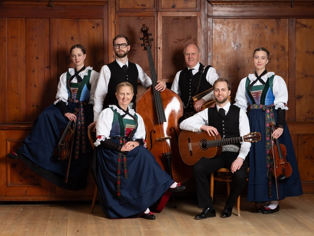
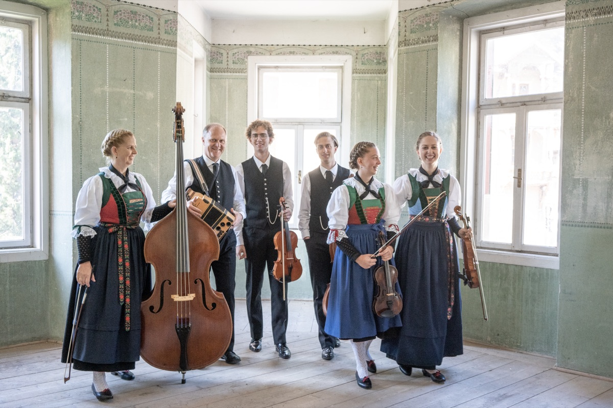
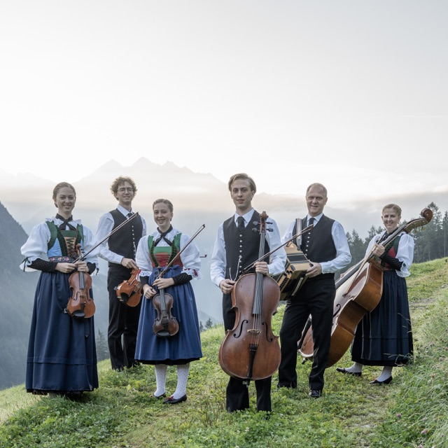

2025
Spotify-Link folgt
Aus dem Ahrntal
Authentische alpenländische Volksmusik, gemeinsam gewachsen und mit Freude gespielt.

Gemeinsam gewachsen
Die Familienmusik Huber stammt aus Luttach im Ahrntal (Südtirol).
Die Eltern Judith (Blockflöte und Kontrabass) und Andreas (Gitarre und Steirische Harmonika) musizieren mit ihren vier Kindern Leah Maria (Violine und Harfe), Samuel Sebastian (Violoncello, Gitarre und Kontrabass), Elias Gabriel (Violine, Viola und Kontrabass) und Esther Maria (Violine und Gitarre).
Durch gemeinsames Singen war der Grundstein für die heute bestehende Familienmusik schon früh gelegt. Es folgten erste instrumentale Gehversuche und kleine Auftritte bei familiären Feiern.
Der mehrmalige Besuch der Alpenländischen Sing- und Musizierwoche am Ritten in Südtirol zog Eltern und Kinder endgültig in den Bann der Alpenländischen Volksmusik. Enge Freundschaften und zentrale musikalische Wegbegleiter ließen die Freude am gemeinsamen Musizieren in unterschiedlichen Besetzungen aufblühen und im Laufe der Jahre fand die Familienmusik Huber zu ihrem unverwechselbaren Klang.
Nachdem sie im Jahr 2016 im Rahmen des 22. Alpenländischen Volksmusikwettbewerbs in Innsbruck mit dem Herma-Haselsteiner-Preis ausgezeichnet wurde, bekam die Familienmusik Huber Gelegenheit bei zahlreichen bedeutenden Veranstaltungen aufzutreten. Zu den Höhepunkten zählen das Bischofshofener Amselsingen, das Tiroler Adventsingen und verschiedene Rundfunk- und Fernsehsendungen von RAI, ORF und BR. Im Jahr 2025 wurde das musikalische Wirken der Familie mit dem Pongauer Hahn gewürdigt.
Obwohl nunmehr alle Kinder erwachsen und örtlich verstreut sind, bleibt das gemeinsame Musizieren eine Konstante. Die Familienmusik Huber ist weiterhin in verschiedensten Feldern der Alpenländischen Volksmusik aktiv, entwickelt sich gerne und stetig weiter, beschreitet immer wieder neue Wege und bereichert mit ihren Klängen und mit Begeisterung kirchliche und weltliche Anlässe wie Adventsingen, Musikantentreffen, Konzerte, Hochzeiten und Tanzveranstaltungen im In- und Ausland.
Zum Anhören
Im Jahr 2018 verwirklichten wir mit einer Weihnachts-CD unser erstes CD-Projekt. Darauf folgte 2020 eine Eigenproduktion, ehe zuletzt gemeinsam mit dem Huber Viergsong und Brunverdi eine weitere CD entstand.
Wer unsere Musik gerne mit nach Hause nehmen möchte, kann die CDs bei uns anfragen und bestellen. Wir senden sie sehr gerne zu.


Live erleben
Wir freuen uns, von Ihnen zu hören
Sie möchten uns für eine Veranstaltung anfragen? Schreiben Sie uns mit Datum, Ort und Anlass.
Auftritt anfragen